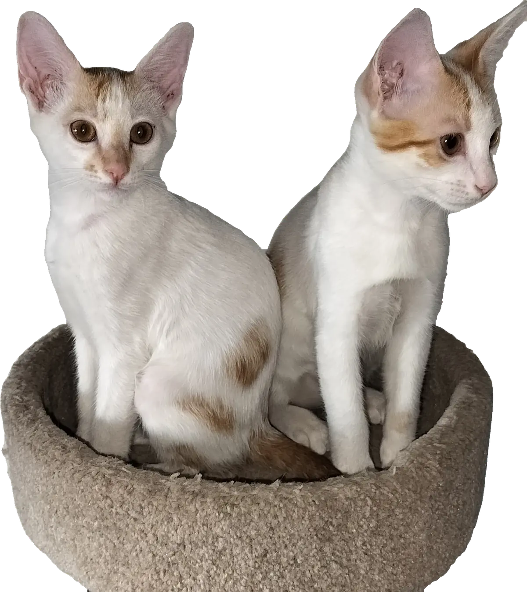
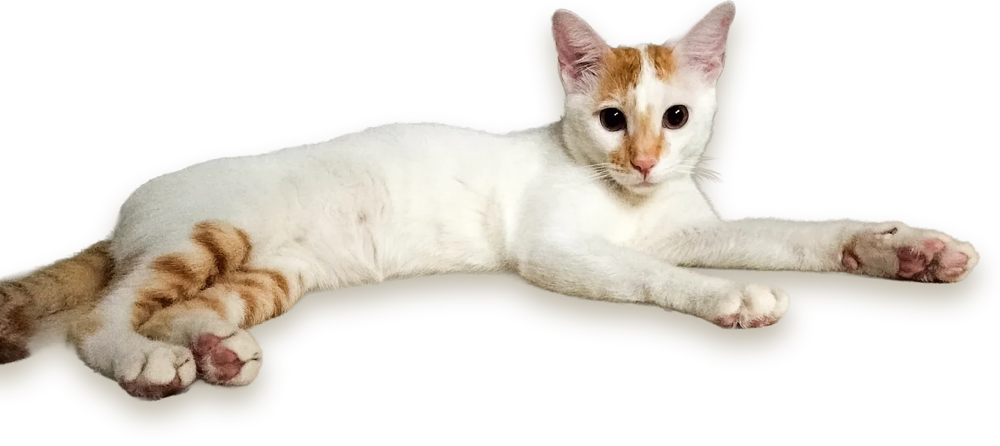

catadoption_pune
catadoption_pune
catadoption_pune
catadoption_pune

catadoption_pune · Pune & PCMC
A volunteer-run virtual adoption centre. We post the cats rescuers are looking after.
Pune has no shelter for a healthy cat, so a cat that needs a home waits with the person who rescued it. catadoption_pune is the notice board between them and you: we post their cats, from Baner, Kothrud, Viman Nagar, Kharadi, Pimple Saudagar and beyond, after a basic check with each rescuer.
Pune has no shelter for a healthy cat, not even a government one. So every cat on our board is living with the person who rescued it.
See the cats looking for homes, with photos, age, area and the rescuer's note. New cats post on Instagram too.
The rescuer's number is on every post. They know the cat best, and they'll ask about your home. That's how they find the right match.
Meet the cat, collect its vaccination records, and go home together. You don't pay anything, and neither does the rescuer.

Most were abandoned, orphaned or born by accident, and they make just as good pets as any breed.
Adoption is free — a cat is not a commodity.
Meet the cats Ready to adopt? Start with the adopter form Rescuer with a cat to place? Send us a cat